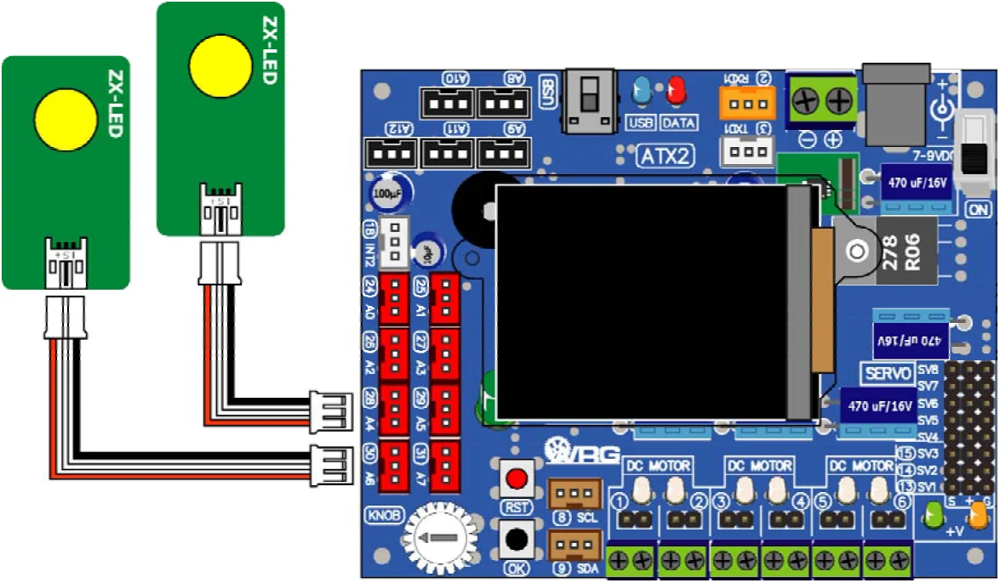

Activity 3 : Control the simple output devices
The library file ATX2.h provides out (char _bit, char _dat) function for sending a logic "0" or "1" to the microcontroller’s digital output pin. It helps the ATX2 to to drive the output device easier. The simplest example device is LED.
In this activity, connect the ZX-LED board to the ATX2 board at any pin. LED on ZX-LED board will be on when receive the logic "1" and off when receive the logic "0"
(A3.1) Connect the first ZX-LED board to pin 28 and second one to pin 30.

(A3.2) Create the new sketch with Listing A3-1 and save as ATX2_LEDTest.ino file.
(A3.3) Apply the supply voltage to the ATX2 board and turn on power. Connect the USB cable between ATX2 board and computer. Compile and upload to the ATX2 board then run the sketch.
(A3.4) Observe the operation of both ZX-LED board.
The ATX2 monitor shows the title message. Then press the OK button start. The screen shows message > Running.. and LED of both ZX-LED boards on and off alternately continuous.
#include <ATX2.h> // Include the main library
void setup()
{
OK();
}
void loop()
{
out(28,1); // LED at pin 28 is on
out(30,0); // LED at pin 30 is off
sleep(400);
out(28,0); // LED at pin 28 is off
out(30,1); // LED at pin 30 is on
sleep(400);
}Original manual, pages 110–111